Semana 8. Persistencia local: SQLite, preferencias y almacenamiento seguro
| Asignatura | Programación Móvil (IF2004) |
| Grupos | 601 y 602 de Ingeniería Informática |
| Unidad | Unidad 2. Interfaz, datos y persistencia |
Presentación interactiva de la sesión
1 Lo que vas a lograr
En la Semana 7 tu app le pidió el catálogo a un servidor. Funciona mientras haya internet. Si el comprador abre la app en el bus, sin señal, la pantalla queda vacía o muestra un error, aunque hace cinco minutos tenía el catálogo completo. La especificación del proyecto lo pide al revés: sin conexión, el comprador debe poder consultar el último catálogo que descargó, aunque no pueda confirmar un pedido (regla RN-06).
Para eso la app necesita guardar datos en el celular y encontrarlos la próxima vez que se abra. Esta semana aprendes tres lugares donde guardarlos, cada uno para un tipo de dato distinto: preferencias para un ajuste sencillo, SQLite para el catálogo y almacenamiento seguro para un secreto.
La guía va despacio. Cada paso agrega una sola idea y funciona antes de pasar al siguiente. Como casi todo lo de esta semana ocurre dentro de un State (abrir la base en initState y pintar el resultado con setState), la Parte 2 repasa StatefulWidget completo antes de usarlo.
Al terminar la guía puedes:
- Decidir en qué lugar guardar un dato (variable, preferencias, SQLite, almacenamiento seguro o servidor) y decir qué sobrevive al cerrar la app.
- Explicar qué es el estado, qué hace
setState, qué corre una sola vez eninitState, qué hacedisposey para qué sirvemounteddespués de unawait. - Guardar y leer un ajuste con
shared_preferences. - Explicar qué es una tabla, una fila, una columna y una clave primaria, y escribir las cuatro sentencias
INSERT,SELECT,UPDATEyDELETE. - Abrir una base con
sqflite, crear una tabla, e insertar, leer y borrar filas, convirtiendoProductoaMapy de vuelta. - Guardar, leer y borrar un dato sensible con
flutter_secure_storage, y explicar por qué no va en preferencias. - Armar la pantalla de catálogo que pide a la red, guarda lo recibido en SQLite y, sin red, muestra lo último guardado con un aviso y la confirmación bloqueada.
- Leer los mensajes de error más comunes de esta semana y saber dónde mirar.
Los recuadros Para memorizar reúnen lo poco que conviene saber de memoria. Los recuadros Para razonar reúnen lo que se deduce del mecanismo. Antes de abrir cada respuesta oculta, escribe tu predicción.
Necesitas:
- La Semana 7 vista: peticiones con
http,async/awaity los estados de una pantalla. - Flutter 3.41.9 (canal stable) y Dart SDK 3.11.5, las mismas versiones de las semanas anteriores.
- Un emulador de Android o un celular conectado.
sqfliteyflutter_secure_storagefuncionan en Android e iOS. No los pruebes en Chrome: allí la base de datos no abre. El código de esta guía pasaflutter analyzesin errores, y las operaciones de preferencias, SQLite y almacenamiento seguro y el catálogo de la Parte 7 se ejecutaron en un emulador de Android (Pixel 9a).
Versiones de los paquetes. Estas son las que resolvió flutter pub add con Flutter 3.41.9 al verificar esta guía:
| Paquete | Versión | Para qué |
|---|---|---|
sqflite |
2.4.2+1 | La base de datos SQLite |
shared_preferences |
2.5.5 | Preferencias (un ajuste sencillo) |
flutter_secure_storage |
11.2.0 | Almacenamiento seguro |
path |
1.9.1 | Armar la ruta del archivo de la base |
http |
1.6.0 | La petición de red, como en la Semana 7 |
sqflite tiene publicada una versión más reciente (2.4.4) que exige un Dart más nuevo que el del curso. Si pegas el bloque de abajo en tu pubspec.yaml y ejecutas flutter pub get, te quedas con la versión verificada.
Un proyecto aparte. Crea uno para esta semana:
flutter create practica_s08
cd practica_s08
flutter pub add sqflite shared_preferences flutter_secure_storage path httpDespués de ese comando, el bloque dependencies de tu pubspec.yaml queda así:
dependencies:
flutter:
sdk: flutter
flutter_secure_storage: ^11.2.0
http: ^1.6.0
path: ^1.9.1
shared_preferences: ^2.5.5
sqflite: ^2.4.2+1En las Partes 2 a 6 cada ejemplo trae un main.dart completo: lo pegas encima del anterior. En la Parte 7 el catálogo usa main.dart y un archivo de ayuda, base_datos.dart.
Permiso de internet. Las versiones de depuración (flutter run) ya pueden usar internet. Para una versión de lanzamiento (flutter build apk --release), agrega esta línea en android/app/src/main/AndroidManifest.xml, justo antes de la etiqueta <application:
<uses-permission android:name="android.permission.INTERNET"/>De dónde vienen los datos. El catálogo de Mercado Campesino todavía no tiene servidor propio. Para que esta guía funcione sola, la Parte 7 pide los productos a un servicio de práctica gratuito y público, dummyjson.com, que devuelve productos de supermercado con su precio y su inventario. Los nombres están en inglés y los precios en dólares; el código los convierte a pesos con una multiplicación para tener precios enteros. Es un servicio de práctica, no el del proyecto.
El modelo de datos. La especificación (alcance.md) no define los campos de un producto. Esta guía usa el mismo mínimo de la Semana 7: un Producto con id, nombre, precio y disponible.
2 Parte 1. Dónde viven los datos de una app
El problema real
La pantalla de catálogo de la Semana 7 guarda la lista de productos en una variable del State. Funciona mientras la app está abierta. Cuando el comprador cierra la app y la abre de nuevo, la lista empieza vacía y hay que pedirla otra vez a internet. Antes de elegir una herramienta hay que saber qué lugares existen y cuánto dura un dato en cada uno.
Predice primero. Tu app tiene una lista de 27 productos en una variable de un State. El comprador cierra la app deslizándola desde las apps recientes y la vuelve a abrir. ¿Qué pasa con la lista?
La lista desaparece. Una variable vive en la memoria RAM del proceso de tu app. Cuando el sistema cierra el proceso, la memoria se libera y todo lo que había ahí se pierde. Al abrir la app otra vez, Flutter arranca de cero y State vuelve a ejecutar sus valores iniciales.
Modelo mental: seis lugares, seis duraciones
Un dato puede vivir en seis lugares. Los cinco primeros están dentro del celular; el último está en un servidor.
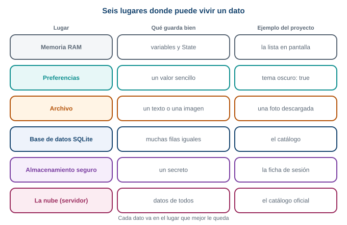
Cada lugar guarda bien un tipo de dato distinto.
- Memoria RAM. Las variables de tu código. Es rápida y se pierde al cerrar la app.
- Preferencias. Pares de clave y valor para ajustes pequeños: tema oscuro, municipio elegido.
- Archivo. Un texto o una imagen guardados tal cual en la carpeta de la app.
- Base de datos SQLite. Muchas filas con la misma forma, que se pueden filtrar y ordenar: el catálogo.
- Almacenamiento seguro. Un secreto, como una ficha de sesión. El sistema lo cifra.
- La nube. Un servidor propio o de terceros. Lo ven todos los dispositivos, pero necesita internet.
Esta semana usas tres: preferencias, SQLite y almacenamiento seguro. Los archivos existen y se usan sobre todo para imágenes y documentos; no los necesitas hoy.
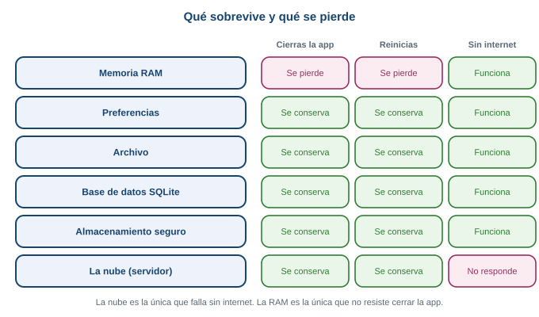
Qué sobrevive. Solo la memoria RAM se pierde al cerrar la app. Solo la nube falla sin internet.
Cómo elegir
Una sola pregunta por vez, de arriba hacia abajo, te lleva al lugar correcto:
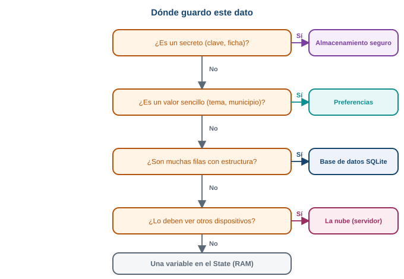
El árbol de decisión. Empieza por la pregunta de arriba.
Aplicado al proyecto:
| Dato | Lugar | Por qué |
|---|---|---|
| La lista que se está viendo ahora | Variable del State |
Solo importa mientras la pantalla está abierta |
| Si el comprador prefiere el tema oscuro | Preferencias | Un solo valor sencillo |
| El último catálogo descargado | SQLite | Muchas filas iguales: id, nombre, precio, disponible |
| La ficha de sesión del comprador | Almacenamiento seguro | Es un secreto |
Dónde queda cada cosa en el celular
Cada app tiene una carpeta privada que las demás apps no pueden leer. Ahí quedan las preferencias y la base de datos. La llave con la que se cifran los secretos la guarda el propio sistema, aparte.
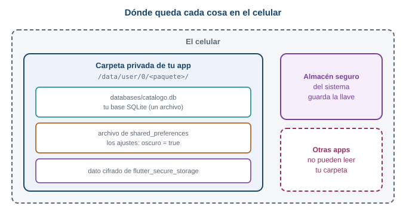
La carpeta privada de tu app.
- Una variable vive solo mientras la app corre. Para que un dato sobreviva, hay que guardarlo.
- Preferencias: un ajuste sencillo. SQLite: muchas filas. Almacenamiento seguro: un secreto.
- Cada app tiene una carpeta privada; las otras apps no la leen.
Ante un dato nuevo no busques “cuál herramienta usar”. Pregunta qué tan largo es, si es un secreto y cuánto debe durar. Con esas tres respuestas el árbol te lleva al lugar.
La lista de productos que ves en pantalla vive en una variable, y el catálogo que guardas vive en SQLite. ¿Por qué conviene tener los dos y no solo uno? Piensa qué es más rápido de leer y qué sobrevive a cerrar la app. En la Parte 7 verás cómo trabajan juntos.
3 Parte 2. StatefulWidget, repasado completo
En esta semana todo pasa dentro de un State: abrir la base de datos, leer los datos y dibujarlos. Si StatefulWidget todavía te queda confuso, no sigas: esta parte lo explica entero, con un ejemplo mínimo. En la Semana 7 lo viste con otro ejemplo (Parte 3 de esa guía); aquí lo repasas desde cero con la misma analogía.
El problema real
La pantalla del catálogo pasa por varias caras: “cargando”, la lista, y un aviso si no hay red. La pantalla cambia después de haber nacido, y nadie la reconstruye desde afuera. Necesitas datos que cambian y una forma de decirle a Flutter que los vuelva a mostrar.
Predice primero. Un StatelessWidget declara int cantidad = 0; como campo, muestra Text('$cantidad') y tiene un botón que hace cantidad = cantidad + 1. ¿Compila? Si compilara y pulsaras el botón tres veces, ¿qué verías?
No compila. Un StatelessWidget es inmutable: Flutter exige que todos sus campos sean final. El analizador de Dart lo dice así:
warning - This class (or a class that this class inherits from) is marked as '@immutable',
but one or more of its instance fields aren't final: PantallaContador.cantidad
error - Can't define a const constructor for a class with non-final fieldsY si movieras la variable dentro de build, la pantalla se quedaría en 0 siempre: nadie le pidió a Flutter que dibuje de nuevo, y cada ejecución de build volvería a crear la variable en 0.
Qué es el estado
El estado es un dato que cambia mientras la pantalla está viva y que la pantalla debe reflejar. Dos preguntas lo identifican:
- ¿Este dato puede cambiar mientras la persona usa la pantalla?
- Si cambia, ¿la pantalla tiene que verse distinta?
Si las dos respuestas son sí, es estado. En el catálogo: la lista de productos y si está cargando son estado. El título “Catálogo” no lo es, porque nunca cambia.
Una analogía: el menú impreso y la pizarra
En un restaurante hay dos formas de mostrar el menú del día.
- Un menú impreso. Si el tomate sube de precio, hay que imprimir otro menú. El viejo no se corrige solo.
- Una pizarra. Borras el precio y escribes el nuevo. La pizarra es la misma; lo escrito cambió.
Un StatelessWidget es el menú impreso: describe lo que se ve a partir de los datos que recibió, y si cambian, se construye otro. Un StatefulWidget es la pizarra: tiene un lugar donde guardar datos que cambian y una forma de avisar “reescribí, vuelve a dibujar”.
Las dos clases
Un StatefulWidget se escribe con dos clases, cada una con un trabajo.
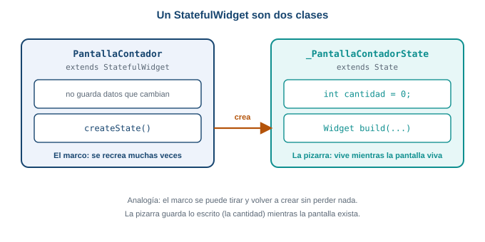
Las dos clases. El marco se puede volver a crear; el State se conserva mientras la pantalla viva.
- La clase
StatefulWidgetes el marco de la pizarra. Es fija y casi no hace nada: solo crea suState. - La clase
Statees lo escrito en la pizarra. Guarda las variables que cambian y tiene el métodobuild. Flutter la conserva viva mientras la pantalla exista.
¿Por qué dos? Flutter vuelve a crear los widgets muchas veces porque son baratos. Si el dato viviera en el widget, se perdería en cada recreación. En el State, que Flutter conserva, sobrevive.
Pega esto en lib/main.dart de practica_s08 y ejecuta:
import 'package:flutter/material.dart';
void main() => runApp(const MaterialApp(home: PantallaContador()));
class PantallaContador extends StatefulWidget {
const PantallaContador({super.key});
@override
State<PantallaContador> createState() => _PantallaContadorState();
}
class _PantallaContadorState extends State<PantallaContador> {
int cantidad = 0;
@override
Widget build(BuildContext context) {
debugPrint('build con cantidad = $cantidad');
return Scaffold(
appBar: AppBar(title: const Text('Cantidad de tomates')),
body: Center(
child: Text('$cantidad', style: const TextStyle(fontSize: 48)),
),
floatingActionButton: FloatingActionButton(
onPressed: () {
setState(() {
cantidad = cantidad + 1;
});
},
child: const Icon(Icons.add),
),
);
}
}Línea por línea:
class PantallaContador extends StatefulWidgetes el marco. No tiene variables que cambien.createState() => _PantallaContadorState()le dice a Flutter quéStatele corresponde. Flutter lo llama una vez, cuando la pantalla nace.class _PantallaContadorState extends State<PantallaContador>es donde viven los datos. El guion bajo del comienzo hace la clase privada de este archivo; es la convención de Dart para todoState.int cantidad = 0;es el estado. Está fuera debuild, así que no se reinicia cuandobuildcorre de nuevo.debugPrint(...)escribe en la consola cada vez quebuildcorre. Te servirá para ver quebuildse repite.setState(() { cantidad = cantidad + 1; })cambia el dato y avisa a Flutter.
Qué hace setState
setState recibe una función y hace tres cosas, en este orden:
- Ejecuta esa función, que es donde cambias la variable.
- Marca la pantalla como desactualizada.
- Pide a Flutter que ejecute
buildotra vez.
setState no dibuja nada. Quien dibuja es build; setState solo pide que vuelva a correr.
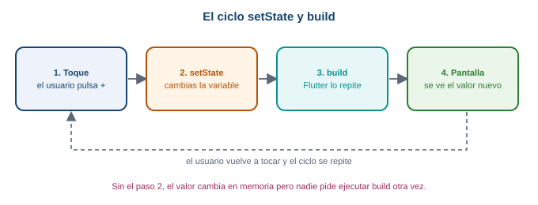
El ciclo completo. Cada toque recorre las cuatro cajas.
Pulsa el botón dos veces. En la consola aparece build con cantidad = 0 al arrancar, y después build con cantidad = 1 y build con cantidad = 2. Cada toque produjo una ejecución nueva de build.
Rompe esto: olvida setState
Cambia el onPressed para que quede sin setState:
onPressed: () {
cantidad = cantidad + 1;
debugPrint('cantidad vale $cantidad');
},Pulsa el botón. La consola dice cantidad vale 1, 2, 3, pero en pantalla sigue el 0 y no aparece ningún build con cantidad = ... nuevo. La variable cambió y nadie pidió a Flutter que corriera build. Cuando una pantalla “no se actualiza”, lo primero que se revisa es si el cambio está dentro de setState.
El ciclo de vida mínimo
Un State nace, vive y muere. Flutter llama a tres métodos en esos momentos:
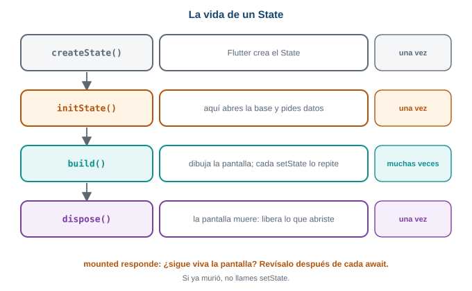
La vida de un State. initState y dispose corren una vez; build corre muchas veces.
| Método | Cuándo corre | Para qué lo usas |
|---|---|---|
initState |
Una vez, cuando el State nace |
Arrancar cosas una sola vez. Esta semana: abrir la base y pedir datos |
build |
La primera vez y después de cada setState |
Solo dibujar |
dispose |
Una vez, cuando la pantalla muere | Liberar lo que abriste (controladores, temporizadores) |
Dos reglas:
- En
initStateempieza consuper.initState();, y endisposetermina consuper.dispose();. buildsolo dibuja. No abres bases ni pides datos ahí, porquebuildcorre muchas veces.
initState y mounted, con un ejemplo
Esta pantalla simula una carga lenta: espera tres segundos y cambia el mensaje. Pega esto en lib/main.dart:
import 'package:flutter/material.dart';
void main() => runApp(const MaterialApp(home: PantallaInicio()));
class PantallaInicio extends StatelessWidget {
const PantallaInicio({super.key});
@override
Widget build(BuildContext context) {
return Scaffold(
appBar: AppBar(title: const Text('Inicio')),
body: Center(
child: FilledButton(
onPressed: () {
Navigator.push(
context,
MaterialPageRoute(builder: (context) => const PantallaCarga()),
);
},
child: const Text('Abrir catálogo'),
),
),
);
}
}
class PantallaCarga extends StatefulWidget {
const PantallaCarga({super.key});
@override
State<PantallaCarga> createState() => _PantallaCargaState();
}
class _PantallaCargaState extends State<PantallaCarga> {
String mensaje = 'Cargando...';
@override
void initState() {
super.initState();
debugPrint('initState: nace la pantalla');
cargar();
}
Future<void> cargar() async {
await Future.delayed(const Duration(seconds: 3));
setState(() {
mensaje = 'Catálogo listo';
});
}
@override
void dispose() {
debugPrint('dispose: muere la pantalla');
super.dispose();
}
@override
Widget build(BuildContext context) {
return Scaffold(
appBar: AppBar(title: const Text('Catálogo')),
body: Center(child: Text(mensaje, style: const TextStyle(fontSize: 24))),
);
}
}Lo importante está en initState: llama a cargar() una sola vez y sigue sin esperarla. cargar es async: espera tres segundos con await y después cambia el mensaje con setState. Mientras tanto, build ya dibujó “Cargando…”.
Pulsa “Abrir catálogo” y espera: en la consola ves initState: nace la pantalla y a los tres segundos el mensaje cambia a “Catálogo listo”.
Rompe esto. Pulsa “Abrir catálogo” y, antes de que pasen tres segundos, vuelve atrás con el gesto de retroceso. La pantalla murió (dispose: muere la pantalla), pero cargar sigue esperando. Cuando termina, llama a setState sobre una pantalla que ya no existe:
setState() called after dispose(): _PantallaCargaState#f0ecb(lifecycle state: defunct, not mounted)
This error happens if you call setState() on a State object for a widget that no longer appears in
the widget tree (e.g., whose parent widget no longer includes the widget in its build).El número después de # cambia en cada ejecución. La solución es una propiedad del State, mounted, que vale true mientras la pantalla está viva. Se revisa después de cada await, antes de llamar a setState:
Future<void> cargar() async {
await Future.delayed(const Duration(seconds: 3));
if (!mounted) return;
setState(() {
mensaje = 'Catálogo listo';
});
}Léelo como: “si la pantalla ya murió, no hagas nada”. Repite la prueba: ahora puedes volver atrás antes de los tres segundos y no aparece ningún error.
Con await, el código se detiene en esa línea y el resto de la función espera, pero la pantalla sigue funcionando. Por eso, cuando la función continúa, el mundo pudo haber cambiado: es el motivo de revisar mounted.
Lo que haremos esta semana con esto
La carga del catálogo guardado sigue el mismo patrón, solo que en lugar de Future.delayed espera a la base de datos:
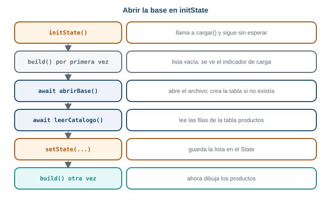
Abrir la base en initState y pintar con setState. Es el mismo patrón de la carga de tres segundos.
- Estado: un dato que cambia y que la pantalla debe mostrar.
- Dos clases: el
StatefulWidgetcrea elState; elStateguarda los datos y tienebuild. - Cambia el dato dentro de
setState.setStatepide quebuildcorra de nuevo. initStatecorre una vez;disposecorre al morir.- Después de un
await:if (!mounted) return;antes desetState.
¿Por qué build no puede abrir la base de datos? Porque build corre cada vez que hay un cambio, y abrir la base en cada cambio sería lento y repetido. Lo que debe pasar una sola vez va en initState; lo que se repite va en build. Con esa regla de “una vez o muchas veces” decides dónde va cada cosa.
En cargar, setState queda después de un await. Si en lugar de volver atrás el usuario girara el celular y Flutter reconstruyera la pantalla, ¿se perdería mensaje? Piensa en qué clase vive y por qué Flutter la conserva.
4 Parte 3. Preferencias: guardar un ajuste sencillo
El problema real
El comprador activa el tema oscuro. Cierra la app, la abre al día siguiente y el tema vuelve a ser claro. Tiene que activarlo de nuevo cada vez. Un ajuste tan pequeño como “tema oscuro: sí o no” debe sobrevivir al cierre de la app, y para eso existen las preferencias.
Predice primero. Tu app guarda oscuro = true en una variable del State y la muestra con un Switch. El comprador activa el interruptor, cierra la app y la abre otra vez. ¿Cómo aparece el interruptor?
Apagado. La variable vivía en la memoria RAM y se perdió al cerrar la app (Parte 1). Hay que guardar el valor en un lugar que sobreviva, y leerlo cuando la app arranca.
Modelo mental: un cuaderno de pares clave y valor
Las preferencias son un archivo pequeño de pares clave y valor. La clave es un nombre que tú escoges ('oscuro') y el valor es el dato (true). Guardar es escribir un par; leer es preguntar por la clave.
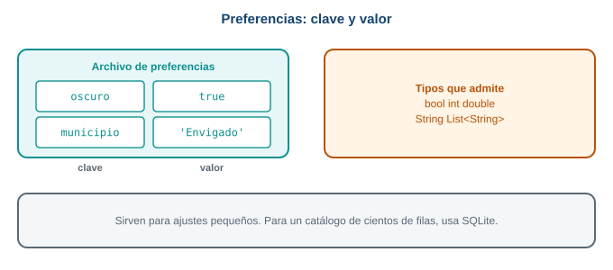
Un archivo de preferencias. Cada fila es una clave y su valor.
Tienen límites que debes conocer. Según la documentación de Flutter, solo admiten tipos primitivos (int, double, bool, String y List<String>), no están hechas para guardar grandes cantidades de datos y no garantizan que lo escrito sobreviva en todos los casos. Por eso sirven para ajustes, y no para un catálogo.
Paso 1. El tema oscuro sin guardar
Primero la versión que no sobrevive. Pega esto en lib/main.dart:
import 'package:flutter/material.dart';
void main() => runApp(const MiApp());
class MiApp extends StatefulWidget {
const MiApp({super.key});
@override
State<MiApp> createState() => _MiAppState();
}
class _MiAppState extends State<MiApp> {
bool oscuro = false;
@override
Widget build(BuildContext context) {
return MaterialApp(
theme: ThemeData.light(),
darkTheme: ThemeData.dark(),
themeMode: oscuro ? ThemeMode.dark : ThemeMode.light,
home: Scaffold(
appBar: AppBar(title: const Text('Preferencias')),
body: Center(
child: SwitchListTile(
title: const Text('Tema oscuro'),
value: oscuro,
onChanged: (valor) {
setState(() {
oscuro = valor;
});
},
),
),
),
);
}
}La variable oscuro es estado: cambia con el interruptor y la pantalla debe verse distinta. Por eso vive en un State y se cambia dentro de setState, como en la Parte 2. Enciéndelo y se ve oscuro. Ciérrala y ábrela: vuelve a claro.
Paso 3. Leer al arrancar, en initState
Hay que leer el valor guardado al nacer la pantalla. Eso ocurre una sola vez, así que va en initState. Como leer es asíncrono, initState llama a una función async aparte, igual que en la Parte 2:
class _MiAppState extends State<MiApp> {
final prefs = SharedPreferencesAsync();
bool oscuro = false;
@override
void initState() {
super.initState();
cargarTema();
}
Future<void> cargarTema() async {
final guardado = await prefs.getBool('oscuro') ?? false;
if (!mounted) return;
setState(() {
oscuro = guardado;
});
}Línea por línea:
await prefs.getBool('oscuro') ?? falselee el valor y, si esnull(primera vez), usafalse.if (!mounted) return;es la revisión de la Parte 2, después delawait.setStateguarda el valor leído enoscuroy pide dibujar de nuevo.
Mientras se lee, build ya dibujó con oscuro = false; cuando llega el valor, setState repinta.
Paso 4. Guardar al cambiar
Cuando el comprador mueve el interruptor, guardas el valor nuevo además de cambiar la variable:
Future<void> cambiarTema(bool valor) async {
setState(() {
oscuro = valor;
});
await prefs.setBool('oscuro', valor);
}Primero se cambia la pantalla, y después se escribe en el disco. El Switch llama a esta función con onChanged: cambiarTema.
Este es el archivo completo:
import 'package:flutter/material.dart';
import 'package:shared_preferences/shared_preferences.dart';
void main() => runApp(const MiApp());
class MiApp extends StatefulWidget {
const MiApp({super.key});
@override
State<MiApp> createState() => _MiAppState();
}
class _MiAppState extends State<MiApp> {
final prefs = SharedPreferencesAsync();
bool oscuro = false;
@override
void initState() {
super.initState();
cargarTema();
}
Future<void> cargarTema() async {
final guardado = await prefs.getBool('oscuro') ?? false;
if (!mounted) return;
setState(() {
oscuro = guardado;
});
}
Future<void> cambiarTema(bool valor) async {
setState(() {
oscuro = valor;
});
await prefs.setBool('oscuro', valor);
}
@override
Widget build(BuildContext context) {
return MaterialApp(
theme: ThemeData.light(),
darkTheme: ThemeData.dark(),
themeMode: oscuro ? ThemeMode.dark : ThemeMode.light,
home: Scaffold(
appBar: AppBar(title: const Text('Preferencias')),
body: Center(
child: SwitchListTile(
title: const Text('Tema oscuro'),
value: oscuro,
onChanged: cambiarTema,
),
),
),
);
}
}Pruébalo: enciende el interruptor, cierra la app deslizándola desde las apps recientes y ábrela de nuevo. El tema oscuro sigue activo, porque initState leyó true del archivo de preferencias.
Qué pasa si…
- Nunca guardaste esa clave.
getBooldevuelvenull, y por eso el?? false. Sin ese valor por defecto,oscuroseríabool?y elSwitchno aceptanull. - Olvidas el
awaital leer.prefs.getBool('oscuro')devuelve unFuture<bool?>, no unbool. Si lo asignas a una variablebool, Dart no compila. Elawaites lo que convierte elFutureen el valor. - Guardas con una clave y lees con otra (
'oscuro'y'Oscuro'). Las claves distinguen mayúsculas: leesnully parece que no se guardó nada. Define el texto de la clave una sola vez.
- Preferencias: pares clave y valor, para ajustes pequeños.
SharedPreferencesAsync:setBool/getBool,setString/getString,setInt/getInt. Todas conawait.- Leer devuelve
nullsi la clave no existe: usa?? valorPorDefecto. - Se lee en
initStatey se guarda al cambiar el valor.
¿Por qué leer y guardar son asíncronos? Porque tocan el disco, que es mucho más lento que la memoria. Si fueran instantáneos, la pantalla se congelaría mientras espera. Un Future deja que la app siga funcionando y avise cuando termina. Es la misma idea de la petición de red de la Semana 7.
Agrega un TextField y un botón “Guardar” que guarden el municipio del comprador (por ejemplo, 'Envigado') con la clave 'municipio'. Al abrir la app, el campo debe mostrar el municipio guardado. Pista: necesitas un TextEditingController, y recuerda hacerle dispose.
import 'package:flutter/material.dart';
import 'package:shared_preferences/shared_preferences.dart';
void main() => runApp(const MaterialApp(home: PantallaMunicipio()));
class PantallaMunicipio extends StatefulWidget {
const PantallaMunicipio({super.key});
@override
State<PantallaMunicipio> createState() => _PantallaMunicipioState();
}
class _PantallaMunicipioState extends State<PantallaMunicipio> {
final prefs = SharedPreferencesAsync();
final controlador = TextEditingController();
@override
void initState() {
super.initState();
cargar();
}
Future<void> cargar() async {
final guardado = await prefs.getString('municipio') ?? '';
if (!mounted) return;
controlador.text = guardado;
}
Future<void> guardar() async {
await prefs.setString('municipio', controlador.text);
}
@override
void dispose() {
controlador.dispose();
super.dispose();
}
@override
Widget build(BuildContext context) {
return Scaffold(
appBar: AppBar(title: const Text('Municipio')),
body: Padding(
padding: const EdgeInsets.all(16),
child: Column(
children: [
TextField(controller: controlador),
const SizedBox(height: 16),
FilledButton(onPressed: guardar, child: const Text('Guardar')),
],
),
),
);
}
}Aquí no hace falta setState al cargar: asignar controlador.text ya actualiza el campo, porque el TextField escucha a su controlador. Y dispose libera el controlador cuando la pantalla muere, que es el uso típico de dispose.
Conexión con el proyecto
En el catálogo de la Parte 7, el tema oscuro del comprador usa exactamente este código: un MiApp con initState, cargarTema y cambiarTema. El catálogo, en cambio, no va en preferencias: son muchas filas, y para eso sirve SQLite.
5 Parte 4. SQLite sin miedo
El problema real
El catálogo tiene 27 productos, cada uno con id, nombre, precio y si está disponible. Si lo guardas en preferencias, tendrías que inventar una clave por cada dato ('nombre_1', 'precio_1', 'nombre_2'…) y no podrías pedir “solo los disponibles”. Una base de datos resuelve las dos cosas: guarda filas con la misma forma y permite preguntarles cosas.
Predice primero. Tienes una hoja de cálculo con productos: una fila por producto y una columna por dato (id, nombre, precio, disponible). ¿Qué parte de una base de datos relacional se parece a la hoja, qué a una fila y qué a una columna?
La hoja entera es una tabla. Cada fila de la hoja es una fila de la tabla (un producto) y cada columna es una columna (un dato que todos los productos tienen). Una tabla de SQLite es, casi literalmente, una hoja de cálculo con reglas.
Modelo mental: una tabla con reglas
SQLite es una base de datos que vive dentro de un solo archivo en el celular. No hay servidor ni instalación: tu app lee y escribe ese archivo. Es relacional: los datos se organizan en tablas.
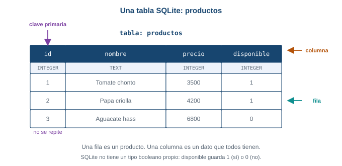
La tabla productos. Cada columna tiene un nombre y un tipo.
- La tabla (
productos) agrupa filas de la misma forma. - Una columna es un dato que todas las filas tienen:
id,nombre,precio,disponible. Cada una tiene un tipo:INTEGER(número entero),TEXT(texto),REAL(número con decimales). - Una fila es un producto completo.
- La clave primaria (
id) identifica cada fila y no se puede repetir. Dos productos no pueden tener el mismoid.
SQLite no tiene un tipo booleano propio. Un bool de Dart se guarda como número: 1 para true, 0 para false. Lo harás en la Parte 5.
SQL: el idioma de las preguntas
Para hablar con la base se usa SQL, un lenguaje con pocas palabras. Cuatro sentencias cubren casi todo, una por cada operación sobre los datos:
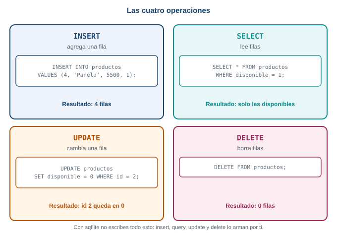
Las cuatro operaciones. Por convención, las palabras de SQL se escriben en mayúsculas.
| Operación | Sentencia | Qué hace |
|---|---|---|
| Crear la tabla | CREATE TABLE productos(id INTEGER PRIMARY KEY, nombre TEXT, precio INTEGER, disponible INTEGER) |
Define las columnas, una sola vez |
| Agregar | INSERT INTO productos VALUES (4, 'Panela', 5500, 1) |
Agrega una fila |
| Leer | SELECT * FROM productos WHERE disponible = 1 |
Devuelve las filas que cumplen la condición |
| Cambiar | UPDATE productos SET disponible = 0 WHERE id = 2 |
Cambia una columna de las filas que cumplen |
| Borrar | DELETE FROM productos |
Borra filas |
El * significa “todas las columnas”. WHERE filtra: sin él, la sentencia afecta todas las filas.
Haz esto ahora
Sin escribir código, imagina esta tabla:
| id | nombre | precio | disponible |
|---|---|---|---|
| 1 | Tomate chonto | 3500 | 1 |
| 2 | Papa criolla | 4200 | 1 |
| 3 | Aguacate hass | 6800 | 0 |
Responde en papel qué devuelve o cómo queda la tabla con cada sentencia, en este orden:
SELECT nombre, precio FROM productos WHERE disponible = 1UPDATE productos SET disponible = 0 WHERE id = 2, y después la sentencia 1 otra vezDELETE FROM productos
- Dos filas:
Tomate chonto, 3500yPapa criolla, 4200. El aguacate no sale porque sudisponiblees- Con
SELECT nombre, preciopides solo esas dos columnas.
- Con
- El
UPDATEcambia la fila conid = 2: la papa queda condisponible = 0. La sentencia 1 ahora devuelve una sola fila:Tomate chonto, 3500. - La tabla queda con cero filas. La tabla sigue existiendo, vacía.
Estos resultados se comprobaron ejecutando exactamente esas sentencias en SQLite.
Qué pasa si…
- Olvidas el
WHEREen unUPDATEo unDELETE. Afecta todas las filas. Es el error más caro de SQL: antes de ejecutar una de esas sentencias, revisa que tenga suWHERE. - Insertas dos filas con el mismo
id. La clave primaria no se puede repetir y SQLite rechaza la segunda. Lo verás con su mensaje real en la Parte 5. - Escribes mal una palabra de SQL (
SELEC). SQLite responde con un error de sintaxis que señala la palabra: lo verás en la sección de errores.
SQLite hace mucho más, pero esta semana no lo necesitas: transacciones (varias operaciones que ocurren todas o ninguna), lotes (batch, muchas operaciones juntas), índices (acelerar búsquedas en tablas grandes) y migraciones (cambiar la forma de la tabla en una versión nueva de la app). Existen, y las usarás cuando una tabla crezca. Para un catálogo de 27 filas, no hacen falta.
- Tabla, fila, columna y clave primaria (
id, no se repite). - Las cuatro sentencias:
INSERTagrega,SELECTlee,UPDATEcambia,DELETEborra. WHEREfiltra. SinWHERE,UPDATEyDELETEafectan todas las filas.boolse guarda como1o0.
¿Por qué usar una base y no preferencias para el catálogo? Mira lo que pides: “las filas con disponible = 1”. Una base entiende esa pregunta porque sabe qué es una fila y una columna. Un archivo de pares clave y valor no sabe qué es “disponible”; tendrías que leerlo todo y filtrar a mano. La estructura es lo que hace útil a la base.
El id de cada producto es la clave primaria. En el servicio de práctica, cada producto trae su propio id. ¿Qué pasaría si dos productos de distintos productores llegaran con el mismo id? Piensa si el id solo alcanza para identificar un producto cuando el catálogo reúne varios productores.
6 Parte 5. sqflite paso a paso
El problema real
Ya sabes qué es una tabla y qué hacen las cuatro sentencias. Falta que tu app Flutter las use. sqflite es el paquete que abre el archivo SQLite en Android e iOS y te deja ejecutar SQL. Vas a escribir un archivo de ayuda, base_datos.dart, con cinco piezas pequeñas: el modelo, abrir la base, borrar, guardar y leer.
Predice primero. Guardas tres productos en la tabla: dos con disponible en true y uno en false. Después lees con la condición disponible = 1. ¿Cuántas filas llegan a tu pantalla?
Dos. La tercera fila sí quedó guardada en la tabla, pero la condición disponible = 1 la deja fuera de la lectura. Es la regla RN-04 del proyecto: un producto que deja de estar disponible no se muestra.
Paso 1. El modelo Producto
Crea lib/base_datos.dart. Empieza por la clase que representa una fila: es el Producto de la Semana 7, con los mismos cuatro campos.
class Producto {
final int id;
final String nombre;
final int precio;
final bool disponible;
const Producto({
required this.id,
required this.nombre,
required this.precio,
required this.disponible,
});
}Si en la Semana 7 tu Producto está en lib/modelo.dart, déjalo ahí o muévelo aquí; lo importante es que exista una sola clase Producto. En esta guía el archivo de ayuda lo contiene para mantener todo en dos archivos.
Paso 2. Abrir la base y crear la tabla
Agrega los import arriba del archivo, y debajo de la clase, la función que abre la base:
import 'package:path/path.dart';
import 'package:sqflite/sqflite.dart';
Database? _base;
Future<Database> abrirBase() async {
_base ??= await openDatabase(
join(await getDatabasesPath(), 'catalogo.db'),
version: 1,
onCreate: (db, version) {
return db.execute(
'CREATE TABLE productos('
'id INTEGER PRIMARY KEY, '
'nombre TEXT, '
'precio INTEGER, '
'disponible INTEGER)',
);
},
);
return _base!;
}Línea por línea:
getDatabasesPath()devuelve la carpeta donde Android guarda las bases de datos de tu app. Es asíncrona, por eso llevaawait.join(carpeta, 'catalogo.db')es del paquetepath: une la carpeta y el nombre del archivo con el separador correcto del sistema. El resultado es una ruta como/data/user/0/<paquete>/databases/catalogo.db, que se vio al ejecutar la guía.openDatabase(ruta, ...)abre el archivo. Si no existe, lo crea.version: 1es el número de versión de la forma de la base. Por ahora, siempre1.onCreatecorre una sola vez: cuando el archivo se crea por primera vez. Ahí se ejecutaCREATE TABLE, con las mismas cuatro columnas del modelo. El texto grande se escribió en cuatro partes pegadas para que se lea mejor.Database? _base;y_base ??= await openDatabase(...)guardan la base ya abierta.??=se lee “si_baseesnull, asígnale esto”. Así la primera llamada abre el archivo y las siguientes reutilizan la misma conexión.
onCreate solo corre cuando el archivo no existe. Si ejecutas la app, y después le cambias el CREATE TABLE (agregas una columna, o cambias un nombre), el archivo viejo ya existe y onCreate no vuelve a correr. Tu cambio no se aplica. En esta semana la solución es borrar el archivo viejo desinstalando la app del emulador. La forma de cambiar una tabla con datos (las migraciones con onUpgrade) existe, pero queda fuera de esta guía.
Paso 3. De Producto a Map y de vuelta
sqflite no guarda objetos Producto. Recibe y devuelve mapas: un Map<String, Object?> donde cada clave es el nombre de una columna. Hay que convertir en los dos sentidos. Agrega dentro de la clase Producto, después del constructor:
Map<String, Object?> toMap() {
return {
'id': id,
'nombre': nombre,
'precio': precio,
'disponible': disponible ? 1 : 0,
};
}
factory Producto.fromMap(Map<String, Object?> mapa) {
return Producto(
id: mapa['id'] as int,
nombre: mapa['nombre'] as String,
precio: mapa['precio'] as int,
disponible: mapa['disponible'] == 1,
);
}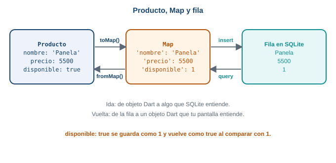
Ida y vuelta. toMap prepara el objeto para guardarlo; fromMap reconstruye el objeto al leer.
toMaparma el mapa con una clave por columna.disponible ? 1 : 0convierte elboolen el número que SQLite entiende.fromMaphace lo contrario. Losas intyas Stringle dicen a Dart el tipo de cada dato, porque el mapa los devuelve comoObject?.mapa['disponible'] == 1convierte el número de vuelta abool.factoryes un constructor que crea el objeto a partir de otra cosa, aquí un mapa. Es la misma idea deProducto.fromJsonde la Semana 7.
Paso 4. Borrar, guardar y leer
Tres funciones al final del archivo, una por operación. Cada una empieza pidiendo la base con abrirBase():
Future<void> borrarCatalogo() async {
final db = await abrirBase();
await db.delete('productos');
}
Future<void> guardarCatalogo(List<Producto> productos) async {
final db = await abrirBase();
await borrarCatalogo();
for (final producto in productos) {
await db.insert('productos', producto.toMap());
}
}
Future<List<Producto>> leerCatalogo() async {
final db = await abrirBase();
final filas = await db.query(
'productos',
where: 'disponible = ?',
whereArgs: [1],
);
return [for (final fila in filas) Producto.fromMap(fila)];
}db.delete('productos')esDELETE FROM productos: borra todas las filas.db.insert('productos', producto.toMap())es unINSERT: agrega una fila con los valores del mapa.guardarCatalogoprimero borra lo viejo y luego inserta lo nuevo, para que el catálogo guardado siempre sea una copia limpia del último recibido. Así no quedan filas repetidas ni choques con la clave primaria.db.query('productos', where: ..., whereArgs: ...)es unSELECTconWHERE. El signo?es un hueco, ywhereArgstrae el valor que va en él. Nunca armes elWHEREpegando texto ('disponible = $x'): la documentación de Flutter lo desaconseja por seguridad.querydevuelve unaList<Map<String, Object?>>, una lista de filas.[for (...) ...]las convierte en una lista deProducto.- Cada una de estas funciones es
asyncy se llama conawait, porque tocar la base toma tiempo.
Paso 5. Una pantalla para comprobarlo
Pega esto en lib/main.dart. Es una pantalla mínima: dos botones y un texto con las filas leídas.
import 'package:flutter/material.dart';
import 'base_datos.dart';
void main() => runApp(const MaterialApp(home: PruebaBase()));
class PruebaBase extends StatefulWidget {
const PruebaBase({super.key});
@override
State<PruebaBase> createState() => _PruebaBaseState();
}
class _PruebaBaseState extends State<PruebaBase> {
List<Producto> productos = [];
@override
void initState() {
super.initState();
leer();
}
Future<void> leer() async {
final lista = await leerCatalogo();
if (!mounted) return;
setState(() {
productos = lista;
});
}
Future<void> guardar() async {
await guardarCatalogo(const [
Producto(id: 1, nombre: 'Tomate chonto', precio: 3500, disponible: true),
Producto(id: 2, nombre: 'Papa criolla', precio: 4200, disponible: true),
Producto(id: 3, nombre: 'Aguacate hass', precio: 6800, disponible: false),
]);
await leer();
}
Future<void> borrar() async {
await borrarCatalogo();
await leer();
}
@override
Widget build(BuildContext context) {
return Scaffold(
appBar: AppBar(title: const Text('Prueba de SQLite')),
body: Column(
children: [
Row(
mainAxisAlignment: MainAxisAlignment.spaceEvenly,
children: [
FilledButton(onPressed: guardar, child: const Text('Guardar')),
FilledButton(onPressed: borrar, child: const Text('Borrar todo')),
],
),
Text('Filas leídas: ${productos.length}'),
for (final p in productos) Text('${p.id} ${p.nombre} \$${p.precio}'),
],
),
);
}
}Fíjate en el patrón de la Parte 2: initState llama a leer() una sola vez; leer espera la base con await, revisa mounted y pinta con setState. Para dibujar la lista se usa un for dentro de la lista children.
Ejecuta la app en el emulador y haz esta secuencia:
- Abre la app. Dice
Filas leídas: 0: la tabla se creó vacía. - Pulsa Guardar. Aparecen dos filas (la 1 y la 2). La 3 está guardada, pero
disponibleesfalsey la lectura la deja fuera. - Cierra la app deslizándola y ábrela otra vez. Siguen las dos filas: leíste de un archivo, y los datos sobrevivieron. Aquí está la diferencia con una variable.
- Pulsa Borrar todo. Vuelve
Filas leídas: 0.
Qué pasa si…
Insertas dos veces el mismo
id. Si quitas la líneaawait borrarCatalogo();deguardarCatalogoy pulsas “Guardar” dos veces, la segunda inserción delid1 la rechaza la clave primaria:DatabaseException(UNIQUE constraint failed: productos.id (code 1555 SQLITE_CONSTRAINT_PRIMARYKEY)) sql 'INSERT INTO productos (id, nombre, precio, disponible) VALUES (?, ?, ?, ?)' args [1, x, 1, 1]Por eso
guardarCatalogoborra primero.Consultas una tabla que no existe. Mira la sección de errores: el mensaje es
no such table.Cierras la base y la sigues usando. Mira también la sección de errores.
openDatabase(ruta, version: 1, onCreate: ...).onCreatecorre solo cuando el archivo es nuevo.- La ruta:
join(await getDatabasesPath(), 'catalogo.db'). insert,query,delete(yupdate) reciben el nombre de la tabla. Todas conawait.- Para
sqflite,boolno existe: se guarda1o0. wherecon?ywhereArgs, nunca con texto pegado.
Piensa en tres capas: tu pantalla habla con Producto; toMap y fromMap traducen; sqflite habla con SQLite. Si algo sale mal, pregunta en qué capa: ¿la pantalla no se repinta (falta setState)?, ¿el objeto no se convierte bien (revisa toMap/fromMap)? o ¿la base se queja (lee el mensaje de DatabaseException)? Cada capa tiene su tipo de síntoma.
guardarCatalogo borra todo y vuelve a insertar. Si la app se cierra justo entre el delete y el último insert, ¿qué queda en la tabla? Existe una herramienta, las transacciones, que hace que varias operaciones ocurran todas o ninguna. Piensa por qué importaría aquí.
7 Parte 6. Almacenamiento seguro
El problema real
En la Semana 10 el comprador va a iniciar sesión, y la app recibirá una ficha de sesión: un texto largo que demuestra quién es. Si la app la pierde, el comprador tiene que iniciar sesión cada vez. Pero esa ficha es un secreto: quien la tenga puede hacerse pasar por el comprador. ¿Dónde se guarda?
Esta semana no hay inicio de sesión real. Simulas la ficha con un texto cualquiera, para aprender el mecanismo.
Predice primero. Guardas la ficha de sesión en preferencias, con setString('ficha', ...). Funciona: sobrevive al cerrar la app. ¿Por qué aun así es una mala idea?
Porque las preferencias guardan los valores como texto normal en un archivo de la carpeta de la app. Si alguien consigue leer ese archivo (por ejemplo, desde una copia de seguridad del celular o un dispositivo con permisos de administrador), ve la ficha tal cual. Las preferencias están hechas para ajustes, no para secretos.
Modelo mental: la caja fuerte del sistema
El almacenamiento seguro funciona como una caja fuerte con dos partes:
- El dato se guarda cifrado: transformado en un texto que no se puede leer sin la llave.
- La llave no la guarda tu app. La guarda el sistema operativo en un lugar protegido.
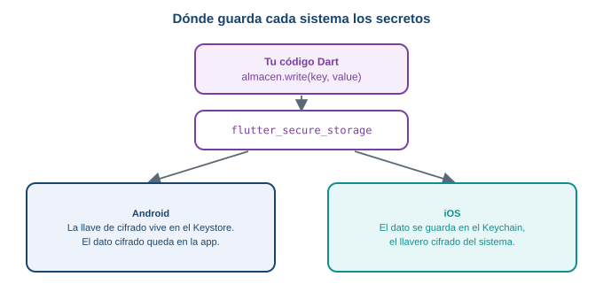
Tu código es el mismo en los dos sistemas. Cada sistema usa su propia caja fuerte.
El paquete flutter_secure_storage esconde esa diferencia. Tú escribes y lees con tres métodos. En Android, el sistema guarda la llave de cifrado en el Keystore y el dato cifrado queda en la carpeta privada de la app. En iOS, el dato se guarda en el Keychain, el llavero cifrado del sistema. No necesitas conocer los detalles del cifrado para usarlo.
Según la documentación del paquete, en Android necesita la versión mínima 23 (Android 6.0), y encryptedSharedPreferences ya no se recomienda. No necesitas pasar ninguna opción: el constructor FlutterSecureStorage() sin argumentos usa la configuración actual.
Guardar, leer y borrar
const almacen = FlutterSecureStorage();
await almacen.write(key: 'ficha_sesion', value: 'ficha-demo-12345'); // guardar
final ficha = await almacen.read(key: 'ficha_sesion'); // leer
await almacen.delete(key: 'ficha_sesion'); // borrar- Los tres métodos son asíncronos: llevan
await. writeyreadusan parámetros con nombre (key:yvalue:).readdevuelveString?: si la clave no existe, devuelvenull.- Solo guarda texto (
String). Si necesitas guardar otra cosa, la conviertes a texto.
La pantalla de prueba
Pega esto en lib/main.dart. Es una pantalla con la ficha, un botón para “iniciar sesión” (guarda la ficha simulada) y otro para “cerrar sesión” (la borra):
import 'package:flutter/material.dart';
import 'package:flutter_secure_storage/flutter_secure_storage.dart';
void main() => runApp(const MaterialApp(home: SesionPantalla()));
class SesionPantalla extends StatefulWidget {
const SesionPantalla({super.key});
@override
State<SesionPantalla> createState() => _SesionPantallaState();
}
class _SesionPantallaState extends State<SesionPantalla> {
final almacen = const FlutterSecureStorage();
String? ficha;
@override
void initState() {
super.initState();
leer();
}
Future<void> leer() async {
final valor = await almacen.read(key: 'ficha_sesion');
if (!mounted) return;
setState(() {
ficha = valor;
});
}
Future<void> iniciarSesion() async {
await almacen.write(key: 'ficha_sesion', value: 'ficha-demo-12345');
await leer();
}
Future<void> cerrarSesion() async {
await almacen.delete(key: 'ficha_sesion');
await leer();
}
@override
Widget build(BuildContext context) {
return Scaffold(
appBar: AppBar(title: const Text('Ficha de sesión')),
body: Column(
children: [
Text(ficha == null ? 'Sin sesión' : 'Ficha guardada: $ficha'),
FilledButton(
onPressed: iniciarSesion,
child: const Text('Iniciar sesión'),
),
FilledButton(
onPressed: cerrarSesion,
child: const Text('Cerrar sesión'),
),
],
),
);
}
}Es el mismo patrón de siempre: initState llama a leer, que espera con await, revisa mounted y pinta con setState. ficha es String? porque puede no existir. Observa cómo el Text decide con ficha == null.
Pruébalo en el emulador: pulsa “Iniciar sesión”, cierra la app y ábrela. La pantalla dice Ficha guardada: ficha-demo-12345, porque initState leyó el valor del almacenamiento seguro. Pulsa “Cerrar sesión” y vuelve a Sin sesión.
Qué va dónde
| Dato | Lugar |
|---|---|
| Tema oscuro, municipio | Preferencias |
| Catálogo de productos | SQLite |
| Ficha de sesión, contraseña, llave de una API | Almacenamiento seguro |
Aunque las contraseñas también son secretos, el proyecto no las guarda: las gestiona Firebase Authentication (Semana 10), y la especificación dice que la app nunca las almacena ni las procesa. Lo que sí guardarás es la ficha que Firebase devuelve.
Qué pasa si…
- Corres esto en Chrome. El paquete está pensado para Android e iOS. Pruébalo en el emulador.
- Desinstalas y reinstalas la app en Android. Los datos de la app se borran con la desinstalación. Según la documentación del paquete, Android guarda copias de seguridad en Google Drive y eso puede provocar una excepción
java.security.InvalidKeyException; la documentación recomienda desactivar la copia automática en el manifiesto. No se reprodujo en esta guía. - Lees una clave que no existe. Obtienes
null, igual que con las preferencias.
- Secretos (fichas, llaves, contraseñas) van en almacenamiento seguro, no en preferencias.
write(key:, value:),read(key:)ydelete(key:), todas conawait.readdevuelveString?.- El dato se guarda cifrado; la llave la guarda el sistema (Keystore en Android, Keychain en iOS).
¿Por qué no basta con cifrar el dato y guardarlo en preferencias? Porque la llave tendría que estar en algún lugar, y si está junto al dato, quien lea uno lee el otro. El sistema operativo guarda la llave aparte, en un lugar al que solo tu app tiene acceso. Esa separación es lo que protege el secreto.
La ficha de sesión caduca. Cuando caduque, la app debería borrarla. ¿En qué momento la borrarías: al cerrar sesión, cuando el servidor responda “ficha vencida”, o en los dos? Decide qué evento provoca el delete.
8 Parte 7. El catálogo que funciona sin conexión
Es el momento de juntar todo. Vas a construir, en ocho pasos pequeños, la pantalla de catálogo de Mercado Campesino con esta regla del proyecto:
Primero la red. Si la red responde, guardas lo recibido en SQLite. Si no hay red, muestras lo último guardado, avisas “Sin conexión, mostrando el último catálogo” y bloqueas la confirmación del pedido (RN-06).
Cómo decide la app que no hay red. No usas ningún paquete de conectividad. La app intenta la petición y, si falla (una excepción), concluye que no hay red. Es lo más simple y lo más fiable: lo que importa es si esta petición funcionó, no si el celular dice estar conectado.
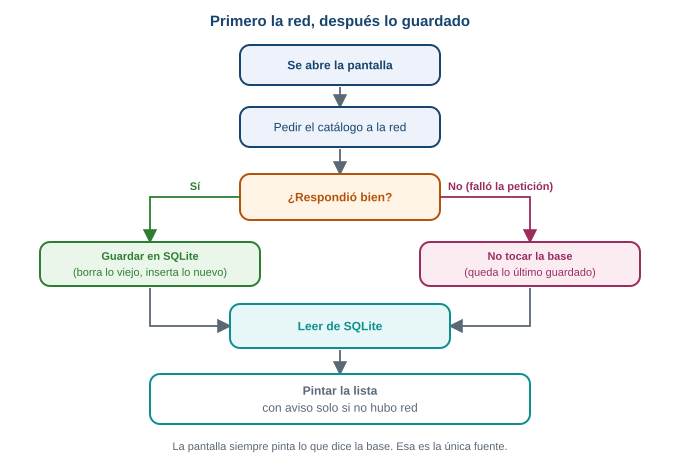
El flujo. La pantalla siempre pinta lo que dice la base, con o sin red.
Observa un detalle de diseño: la pantalla siempre pinta lo leído de SQLite, nunca lo que llegó directo de la red. La red solo sirve para actualizar la base. Así hay una única fuente de verdad, y el código para mostrar el catálogo es el mismo con o sin conexión.
Predice primero. Abres la app con red: ves el catálogo. Activas el modo avión, cierras la app y la abres otra vez. ¿Qué ves?
El mismo catálogo, con un aviso amarillo arriba y el botón de confirmar bloqueado. La petición falló, pero en la base quedó lo que se guardó la última vez que hubo red, y la pantalla lo muestra. Al final de esta parte lo comprobarás tú.
Trabaja en practica_s08, escribe el código en vez de pegarlo y ejecuta en el emulador después de cada paso. Necesitas lib/base_datos.dart de la Parte 5, y en este taller lib/main.dart se reemplaza por el código de cada paso.
1 El modelo: leer el JSON del servicio
El servicio de práctica devuelve el catálogo así (recortado a tres productos):
{
"products": [
{ "id": 16, "title": "Apple", "price": 1.99, "stock": 8 },
{ "id": 17, "title": "Beef Steak", "price": 12.99, "stock": 86 },
{ "id": 18, "title": "Cat Food", "price": 8.99, "stock": 46 }
]
}Los nombres de los campos no coinciden con los de tu tabla (title frente a nombre), y el inventario (stock) es un número, no un bool. Agrega a Producto, en base_datos.dart, un constructor que lea ese formato, justo debajo del constructor normal:
factory Producto.fromJson(Map<String, dynamic> json) {
return Producto(
id: json['id'] as int,
nombre: json['title'] as String,
precio: ((json['price'] as num) * 4000).round(),
disponible: (json['stock'] as int) > 0,
);
}titlepasa anombre.priceviene en dólares, con decimales (num). Multiplicarlo por 4000 y redondear da un precio entero aproximado en pesos. Es una conversión de práctica.disponiblese deduce del inventario: hay producto sistockes mayor que cero.
2 Pedir el catálogo a la red
Reemplaza lib/main.dart por un archivo nuevo que empiece con esta función. Es la petición de la Semana 7, ahora con un tiempo máximo de espera:
import 'dart:convert';
import 'package:flutter/material.dart';
import 'package:http/http.dart' as http;
import 'base_datos.dart';
Future<List<Producto>> pedirCatalogo() async {
final url = Uri.parse(
'https://dummyjson.com/products/category/groceries?select=title,price,stock',
);
final respuesta = await http.get(url).timeout(const Duration(seconds: 8));
if (respuesta.statusCode != 200) {
throw Exception('El servidor respondió ${respuesta.statusCode}');
}
final datos = jsonDecode(respuesta.body) as Map<String, dynamic>;
final lista = datos['products'] as List<dynamic>;
return [
for (final item in lista) Producto.fromJson(item as Map<String, dynamic>),
];
}.timeout(...)hace que la petición falle si pasan 8 segundos sin respuesta. Sin esto, una red lenta dejaría la pantalla cargando mucho tiempo.- Si el servidor responde con un código distinto de 200, la función lanza una excepción. Así, un servidor caído y una red caída terminan igual: una excepción.
jsonDecodeconvierte el texto en unMap; después se recorre la lista y cada elemento pasa porProducto.fromJson.
3 La pantalla con sus estados, solo con la red
Pon esto debajo de pedirCatalogo. Primero la pantalla, sin base de datos todavía:
enum Estado { cargando, listo, sinConexion, vacio }
void main() {
runApp(const MaterialApp(home: CatalogoPantalla()));
}
class CatalogoPantalla extends StatefulWidget {
const CatalogoPantalla({super.key});
@override
State<CatalogoPantalla> createState() => _CatalogoPantallaState();
}
class _CatalogoPantallaState extends State<CatalogoPantalla> {
Estado estado = Estado.cargando;
List<Producto> productos = [];
@override
void initState() {
super.initState();
cargar();
}
Future<void> cargar() async {
setState(() {
estado = Estado.cargando;
});
List<Producto> recibidos = [];
try {
recibidos = await pedirCatalogo();
} catch (e) {
debugPrint('Sin red: $e');
}
if (!mounted) return;
setState(() {
productos = recibidos;
estado = recibidos.isEmpty ? Estado.vacio : Estado.listo;
});
}
@override
Widget build(BuildContext context) {
return Scaffold(
appBar: AppBar(title: const Text('Catálogo')),
body: cuerpo(),
);
}
Widget cuerpo() {
if (estado == Estado.cargando) {
return const Center(child: CircularProgressIndicator());
}
if (estado == Estado.vacio) {
return const Center(
child: Text('No hay catálogo. Conéctate para descargarlo.'),
);
}
return ListView.builder(
itemCount: productos.length,
itemBuilder: (context, indice) {
final producto = productos[indice];
return ListTile(
title: Text(producto.nombre),
trailing: Text('\$ ${producto.precio}'),
);
},
);
}
}Es el patrón de la Parte 2: initState llama a cargar una vez; cargar espera con await, revisa mounted y pinta con setState.
El enum Estado nombra las cuatro caras de la pantalla. Si en la Semana 7 usaste otro enum (cargando, listo, vacio, error), conserva el tuyo: aquí sinConexion reemplaza a error, porque sin red aún hay algo que mostrar.
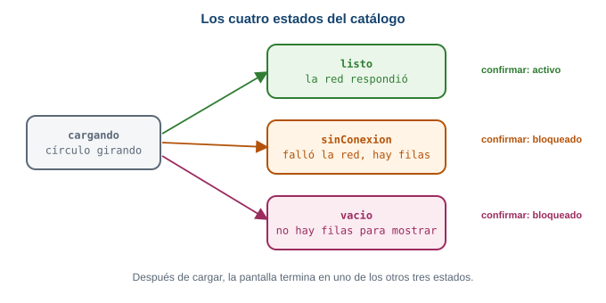
Los cuatro estados. En este paso solo se usan cargando, listo y vacio.
Ejecuta: ves un círculo girando y después la lista de productos. Si activas el modo avión y vuelves a arrancar la app, ves el mensaje “No hay catálogo”. Es el problema del que partimos: sin red, nada.
4 Guardar lo recibido y pintar desde SQLite
Ahora la base. Importa base_datos.dart (ya lo tienes) y cambia solo cargar. Después de recibir, guardas; y en lugar de pintar lo recibido, lees lo guardado y pintas eso:
Future<void> cargar() async {
setState(() {
estado = Estado.cargando;
});
List<Producto>? recibidos;
try {
recibidos = await pedirCatalogo();
} catch (e) {
debugPrint('Sin red: $e');
}
if (recibidos != null) {
await guardarCatalogo(recibidos);
}
final guardados = await leerCatalogo();
if (!mounted) return;
setState(() {
productos = guardados;
estado = guardados.isEmpty ? Estado.vacio : Estado.listo;
});
}Los cambios, uno por uno:
List<Producto>? recibidos;ahora puede sernull: si la petición falla, quedanull. Así distingues “la red falló” de “la red respondió con cero productos”.if (recibidos != null) { await guardarCatalogo(recibidos); }guarda solo si hubo respuesta.final guardados = await leerCatalogo();lee de SQLite siempre.- La pantalla pinta
guardados. Los productos no disponibles (stockcero) no llegan, porqueleerCatalogofiltra condisponible = 1(RN-04).
Ejecuta con red: ves la lista otra vez, pero ahora pasó por la base. Para estar seguro, revisa tu consola: no debe aparecer ningún Sin red.
5 Sin red: queda lo último guardado
El código del paso 4 ya muestra lo guardado cuando la red falla: recibidos queda en null, no se guarda nada, y leerCatalogo devuelve lo de la última vez. Falta distinguir ese caso en el estado. Cambia la parte final de cargar:
setState(() {
productos = guardados;
if (guardados.isEmpty) {
estado = Estado.vacio;
} else if (recibidos == null) {
estado = Estado.sinConexion;
} else {
estado = Estado.listo;
}
});Léelo en orden: si no hay nada guardado, vacio. Si hay algo guardado pero la petición falló (recibidos == null), sinConexion. Si no, listo. Son tres preguntas, y el orden importa: el caso “vacío” se revisa primero porque no hay nada que avisar si no hay nada que mostrar.
6 El aviso y la confirmación bloqueada (RN-06)
Dos cambios en la pantalla. Primero el aviso arriba de la lista, solo cuando el estado es sinConexion. Reemplaza el final de cuerpo() (la lista) por una columna:
return Column(
children: [
if (estado == Estado.sinConexion)
Container(
width: double.infinity,
color: Colors.amber,
padding: const EdgeInsets.all(12),
child: const Text(
'Sin conexión, mostrando el último catálogo',
style: TextStyle(color: Colors.black),
),
),
Expanded(
child: ListView.builder(
itemCount: productos.length,
itemBuilder: (context, indice) {
final producto = productos[indice];
return ListTile(
title: Text(producto.nombre),
trailing: Text('\$ ${producto.precio}'),
);
},
),
),
],
);if (estado == Estado.sinConexion) Container(...)dentro de una lista agrega ese elemento solo si la condición se cumple.Expandedle da a la lista el espacio que sobra debajo del aviso.
Segundo, el botón de confirmar. Agrégalo al Scaffold, y la función confirmar encima de build:
void confirmar() {
ScaffoldMessenger.of(context).showSnackBar(
const SnackBar(content: Text('Pedido confirmado (simulado)')),
);
} bottomNavigationBar: Padding(
padding: const EdgeInsets.all(16),
child: FilledButton(
onPressed: estado == Estado.listo ? confirmar : null,
child: const Text('Confirmar pedido'),
),
),La línea clave es onPressed: estado == Estado.listo ? confirmar : null. Un botón con onPressed: null aparece gris y no responde. Así, solo con el catálogo recién recibido (Estado.listo) se puede confirmar; con sinConexion, vacio o cargando, el botón está bloqueado. Eso es RN-06: sin conexión se consulta, pero no se confirma.
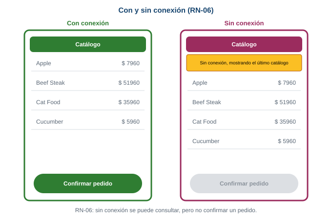
Lo que cambia entre las dos pantallas: el aviso y el botón. La lista es la misma.
7 El tema oscuro
Agrega el tema oscuro de la Parte 3. Importa también package:shared_preferences/shared_preferences.dart. La pantalla de catálogo no cambia de lugar; lo que cambia es quién la envuelve. Crea MiApp, que guarda el tema con preferencias, y que le pasa a CatalogoPantalla el valor y la función para cambiarlo:
class MiApp extends StatefulWidget {
const MiApp({super.key});
@override
State<MiApp> createState() => _MiAppState();
}
class _MiAppState extends State<MiApp> {
final prefs = SharedPreferencesAsync();
bool oscuro = false;
@override
void initState() {
super.initState();
cargarTema();
}
Future<void> cargarTema() async {
final guardado = await prefs.getBool('oscuro') ?? false;
if (!mounted) return;
setState(() {
oscuro = guardado;
});
}
Future<void> cambiarTema(bool valor) async {
setState(() {
oscuro = valor;
});
await prefs.setBool('oscuro', valor);
}
@override
Widget build(BuildContext context) {
return MaterialApp(
title: 'Mercado Campesino',
debugShowCheckedModeBanner: false,
theme: ThemeData(colorScheme: ColorScheme.fromSeed(seedColor: Colors.green)),
darkTheme: ThemeData(
colorScheme: ColorScheme.fromSeed(
seedColor: Colors.green,
brightness: Brightness.dark,
),
),
themeMode: oscuro ? ThemeMode.dark : ThemeMode.light,
home: CatalogoPantalla(oscuro: oscuro, alCambiarTema: cambiarTema),
);
}
}Y CatalogoPantalla recibe esos dos datos por su constructor, como los datos que pasabas entre pantallas en la Semana 5:
class CatalogoPantalla extends StatefulWidget {
final bool oscuro;
final void Function(bool) alCambiarTema;
const CatalogoPantalla({
super.key,
required this.oscuro,
required this.alCambiarTema,
});Dentro del State, se leen con widget.oscuro y widget.alCambiarTema. El main ahora arranca MiApp: runApp(const MiApp());. En la barra, dos botones: uno para recargar y otro para el tema. Los verás en el archivo completo.
8 Comprobar con y sin conexión
Con el archivo completo (más abajo) ejecutándose en el emulador, haz esta secuencia:
- Con red. Abre la app. Ves el catálogo, sin aviso, y el botón “Confirmar pedido” activo. Púlsalo: aparece “Pedido confirmado (simulado)”.
- Activa el modo avión desde los ajustes rápidos del emulador (desliza desde arriba). No cierres la app. Pulsa el botón de recargar de la barra: la petición falla, y aparecen el aviso amarillo, el mismo catálogo y el botón de confirmar gris.
- Cierra la app por completo (deslízala desde las apps recientes) y ábrela otra vez, todavía en modo avión. Ves el catálogo guardado con el aviso amarillo. Los datos sobrevivieron al cierre y a la falta de red.
- Desactiva el modo avión y pulsa recargar: desaparece el aviso y el botón vuelve a estar activo.
- Cambia el tema con el botón de la barra, cierra la app y ábrela: el tema se conserva.
Si tu app no hace algo de esto, revisa en qué paso cambió tu código respecto al archivo completo.
Estos pasos se ejecutaron en un emulador de Android (Pixel 9a). Con red apareció el catálogo y el botón activo. Se activó el modo avión, se cerró la app por completo y se abrió de nuevo: apareció el último catálogo guardado, con el aviso “Sin conexión, mostrando el último catálogo” y el botón de confirmar bloqueado. El tema oscuro también se conservó al cerrar y abrir.
El código completo
lib/base_datos.dart
import 'package:path/path.dart';
import 'package:sqflite/sqflite.dart';
class Producto {
final int id;
final String nombre;
final int precio;
final bool disponible;
const Producto({
required this.id,
required this.nombre,
required this.precio,
required this.disponible,
});
// De la respuesta de la red (JSON) a Producto.
factory Producto.fromJson(Map<String, dynamic> json) {
return Producto(
id: json['id'] as int,
nombre: json['title'] as String,
precio: ((json['price'] as num) * 4000).round(),
disponible: (json['stock'] as int) > 0,
);
}
// De Producto a Map, para guardarlo en SQLite.
Map<String, Object?> toMap() {
return {
'id': id,
'nombre': nombre,
'precio': precio,
'disponible': disponible ? 1 : 0,
};
}
// De una fila de SQLite (Map) de vuelta a Producto.
factory Producto.fromMap(Map<String, Object?> mapa) {
return Producto(
id: mapa['id'] as int,
nombre: mapa['nombre'] as String,
precio: mapa['precio'] as int,
disponible: mapa['disponible'] == 1,
);
}
}
Database? _base;
Future<Database> abrirBase() async {
_base ??= await openDatabase(
join(await getDatabasesPath(), 'catalogo.db'),
version: 1,
onCreate: (db, version) {
return db.execute(
'CREATE TABLE productos('
'id INTEGER PRIMARY KEY, '
'nombre TEXT, '
'precio INTEGER, '
'disponible INTEGER)',
);
},
);
return _base!;
}
Future<void> borrarCatalogo() async {
final db = await abrirBase();
await db.delete('productos');
}
Future<void> guardarCatalogo(List<Producto> productos) async {
final db = await abrirBase();
await borrarCatalogo();
for (final producto in productos) {
await db.insert('productos', producto.toMap());
}
}
Future<List<Producto>> leerCatalogo() async {
final db = await abrirBase();
final filas = await db.query(
'productos',
where: 'disponible = ?',
whereArgs: [1],
);
return [for (final fila in filas) Producto.fromMap(fila)];
}lib/main.dart
import 'dart:convert';
import 'package:flutter/material.dart';
import 'package:http/http.dart' as http;
import 'package:shared_preferences/shared_preferences.dart';
import 'base_datos.dart';
enum Estado { cargando, listo, sinConexion, vacio }
void main() {
runApp(const MiApp());
}
class MiApp extends StatefulWidget {
const MiApp({super.key});
@override
State<MiApp> createState() => _MiAppState();
}
class _MiAppState extends State<MiApp> {
final prefs = SharedPreferencesAsync();
bool oscuro = false;
@override
void initState() {
super.initState();
cargarTema();
}
Future<void> cargarTema() async {
final guardado = await prefs.getBool('oscuro') ?? false;
if (!mounted) return;
setState(() {
oscuro = guardado;
});
}
Future<void> cambiarTema(bool valor) async {
setState(() {
oscuro = valor;
});
await prefs.setBool('oscuro', valor);
}
@override
Widget build(BuildContext context) {
return MaterialApp(
title: 'Mercado Campesino',
debugShowCheckedModeBanner: false,
theme: ThemeData(colorScheme: ColorScheme.fromSeed(seedColor: Colors.green)),
darkTheme: ThemeData(
colorScheme: ColorScheme.fromSeed(
seedColor: Colors.green,
brightness: Brightness.dark,
),
),
themeMode: oscuro ? ThemeMode.dark : ThemeMode.light,
home: CatalogoPantalla(oscuro: oscuro, alCambiarTema: cambiarTema),
);
}
}
Future<List<Producto>> pedirCatalogo() async {
final url = Uri.parse(
'https://dummyjson.com/products/category/groceries?select=title,price,stock',
);
final respuesta = await http.get(url).timeout(const Duration(seconds: 8));
if (respuesta.statusCode != 200) {
throw Exception('El servidor respondió ${respuesta.statusCode}');
}
final datos = jsonDecode(respuesta.body) as Map<String, dynamic>;
final lista = datos['products'] as List<dynamic>;
return [
for (final item in lista) Producto.fromJson(item as Map<String, dynamic>),
];
}
class CatalogoPantalla extends StatefulWidget {
final bool oscuro;
final void Function(bool) alCambiarTema;
const CatalogoPantalla({
super.key,
required this.oscuro,
required this.alCambiarTema,
});
@override
State<CatalogoPantalla> createState() => _CatalogoPantallaState();
}
class _CatalogoPantallaState extends State<CatalogoPantalla> {
Estado estado = Estado.cargando;
List<Producto> productos = [];
@override
void initState() {
super.initState();
cargar();
}
Future<void> cargar() async {
setState(() {
estado = Estado.cargando;
});
List<Producto>? recibidos;
try {
recibidos = await pedirCatalogo();
} catch (e) {
debugPrint('Sin red: $e');
}
if (recibidos != null) {
await guardarCatalogo(recibidos);
}
final guardados = await leerCatalogo();
if (!mounted) return;
setState(() {
productos = guardados;
if (guardados.isEmpty) {
estado = Estado.vacio;
} else if (recibidos == null) {
estado = Estado.sinConexion;
} else {
estado = Estado.listo;
}
});
}
void confirmar() {
ScaffoldMessenger.of(context).showSnackBar(
const SnackBar(content: Text('Pedido confirmado (simulado)')),
);
}
@override
Widget build(BuildContext context) {
return Scaffold(
appBar: AppBar(
title: const Text('Catálogo'),
actions: [
IconButton(icon: const Icon(Icons.refresh), onPressed: cargar),
IconButton(
icon: Icon(widget.oscuro ? Icons.light_mode : Icons.dark_mode),
onPressed: () => widget.alCambiarTema(!widget.oscuro),
),
],
),
body: cuerpo(),
bottomNavigationBar: Padding(
padding: const EdgeInsets.all(16),
child: FilledButton(
onPressed: estado == Estado.listo ? confirmar : null,
child: const Text('Confirmar pedido'),
),
),
);
}
Widget cuerpo() {
if (estado == Estado.cargando) {
return const Center(child: CircularProgressIndicator());
}
if (estado == Estado.vacio) {
return const Center(
child: Text('No hay catálogo. Conéctate para descargarlo.'),
);
}
return Column(
children: [
if (estado == Estado.sinConexion)
Container(
width: double.infinity,
color: Colors.amber,
padding: const EdgeInsets.all(12),
child: const Text(
'Sin conexión, mostrando el último catálogo',
style: TextStyle(color: Colors.black),
),
),
Expanded(
child: ListView.builder(
itemCount: productos.length,
itemBuilder: (context, indice) {
final producto = productos[indice];
return ListTile(
title: Text(producto.nombre),
trailing: Text('\$ ${producto.precio}'),
);
},
),
),
],
);
}
}Qué pasa si…
- Quitas el
try/catchdepedirCatalogo. Sin red, la petición lanza una excepción que nadie atrapa,cargarse interrumpe y la pantalla se queda en “cargando” para siempre. Elcatches lo que convierte “no hay red” en un caso normal. - Pintas
recibidosen lugar de lo leído de la base. Con red funciona igual, pero sin red no hay nada que pintar. Pintar siempre lo leído de la base hace que los dos caminos usen el mismo código. - Olvidas
guardarCatalogoantes de leer. La base queda vacía y, sin red, el estado esvacio, porque nunca se guardó nada. - Quitas
if (!mounted) return;. Si el usuario sale de la pantalla antes de que termine la petición,setStatefalla con el error de la Parte 2.
- Primero la red; si responde, guardas en SQLite; siempre lees de SQLite para pintar.
- “No hay red” significa que la petición falló:
try/catchalrededor depedirCatalogo. onPressed: condición ? función : nullbloquea un botón: es RN-06.- Las cuatro caras de la pantalla:
cargando,listo,sinConexionyvacio.
Si pudieras pintar recibidos directamente cuando hay red, ¿por qué no hacerlo? Porque tendrías dos caminos para mostrar datos (uno de la red y otro de la base), dos formas de equivocarte y dos cosas que probar. Pasar todo por la base deja un solo camino. Cuando varias fuentes alimentan la misma pantalla, conviene que una sola sea la que la pinta.
El botón “Confirmar pedido” se bloquea sin conexión, pero ¿qué pasa si el comprador abre la pantalla con red, y la señal se pierde mientras mira? El estado seguiría siendo listo y el botón, activo. ¿Qué haría falta para que el botón se bloqueara en ese momento? Piensa en qué evento detectaría el fallo: quizá la propia petición de confirmar.
9 Errores frecuentes
Los mensajes de esta sección son los que produjeron el código y los comandos de esta guía al ejecutarlos, no los de un manual. Léelos completos: casi siempre dicen dónde mirar.
no such table
DatabaseException(no such table: clientes (code 1 SQLITE_ERROR): , while compiling: SELECT * FROM clientes)
sql 'SELECT * FROM clientes' args []Consultaste una tabla que no existe. Las dos causas más comunes:
- El nombre está mal escrito (
clientefrente aclientes,productofrente aproductos). Compara el nombre del mensaje con el de tuCREATE TABLE. - Cambiaste el
CREATE TABLEdespués de ejecutar la app. El archivo de la base ya existía,onCreateno volvió a correr y la tabla nueva nunca se creó. Desinstala la app del emulador (borra el archivo) y ejecútala de nuevo. Es la causa que más confunde, porque tu código “se ve bien”.
La palabra después de while compiling: es la sentencia SQL que SQLite no pudo preparar: ahí está tu pista.
near “SELEC”: syntax error
DatabaseException(near "SELEC": syntax error (code 1 SQLITE_ERROR): , while compiling: SELEC * FROM productos)
sql 'SELEC * FROM productos' args []Escribiste mal una palabra de SQL. El mensaje cita la palabra exacta que no entendió (near "SELEC"). Revisa esa palabra y la anterior.
database_closed
DatabaseException(error database_closed)Usaste una base que ya cerraste con db.close(). En esta guía no la cierras: abrirBase guarda la conexión en _base y la reutiliza mientras la app viva. Si cierras la base y sigues usando _base, aparece este error. Cuando cierres una base, asegúrate de que nadie más la use y de que _base vuelva a null.
UNIQUE constraint failed
DatabaseException(UNIQUE constraint failed: productos.id (code 1555 SQLITE_CONSTRAINT_PRIMARYKEY))Insertaste una fila con un id que ya existe. La clave primaria no se puede repetir. En el catálogo se evita con borrarCatalogo() antes de insertar. Mira la Parte 5.
Olvidar el await
Una función que lee la base devuelve un Future. Si no la esperas, Dart ve un Future, no una lista:
final lista = leerCatalogo(); // falta await
print(lista.length);error - The getter 'length' isn't defined for the type 'Future<List<Producto>>'
error - The type 'Future<List<Producto>>' used in the 'for' loop must implement 'Iterable'El mensaje dice el tipo: Future<List<Producto>>. Cuando veas Future<...> donde esperabas el dato, falta un await (y la función donde lo escribes debe ser async).
setState() called after dispose()
setState() called after dispose(): _PantallaCargaState#f0ecb(lifecycle state: defunct, not mounted)Llamaste a setState después de un await, cuando la pantalla ya había muerto. Se arregla con if (!mounted) return; antes del setState, como en la Parte 2.
Usar el paquete en una plataforma que no lo soporta
sqflite funciona en Android, iOS y macOS, y flutter_secure_storage está pensado para Android e iOS (aunque su documentación lista más plataformas, con requisitos propios). Si ejecutas la app de la Parte 5 en Chrome, la app falla al abrir la base: en la prueba de esta guía la consola del navegador mostró solo Uncaught Error, sin un mensaje legible. Cuando un error de base de datos no tenga explicación, confirma primero en qué dispositivo estás ejecutando. Usa el emulador de Android.
Esto no es un error, pero confunde
Si guardas el tema oscuro y al reinstalar la app vuelve a claro, no hay fallo: desinstalar una app borra su carpeta privada, y con ella sus preferencias y su base de datos.
10 Retos
El Reto 1 (guardar el municipio) está en la Parte 3. Estos tres usan el catálogo de la Parte 7. En todos, cada cambio se ejecutó antes de escribir la solución.
Un producto que deja de estar disponible se retira del catálogo visible. Haz que al mantener pulsado un producto de la lista se marque como no disponible en la base y desaparezca de la pantalla. Necesitas una operación nueva de la base: UPDATE.
En base_datos.dart, una función nueva:
Future<void> marcarNoDisponible(int id) async {
final db = await abrirBase();
await db.update(
'productos',
{'disponible': 0},
where: 'id = ?',
whereArgs: [id],
);
}db.update es el UPDATE ... SET disponible = 0 WHERE id = ?: recibe la tabla, el mapa con las columnas que cambian, y el where con su whereArgs. Sin where, cambiaría todas las filas.
En main.dart, dentro del ListTile del itemBuilder:
onLongPress: () async {
await marcarNoDisponible(producto.id);
final guardados = await leerCatalogo();
if (!mounted) return;
setState(() {
productos = guardados;
});
},Mantén pulsado un producto: desaparece, porque leerCatalogo solo devuelve disponible = 1. Sigue guardado en la tabla con disponible en 0. Si recargas con red, el servicio vuelve a enviarlo y reaparece, porque guardarCatalogo reemplaza todo con lo recibido.
Agrega un botón de papelera en la barra que borre el catálogo guardado y deje la pantalla en estado vacio, sin pedir nada a la red.
En el State de CatalogoPantalla, una función:
Future<void> borrarGuardado() async {
await borrarCatalogo();
if (!mounted) return;
setState(() {
productos = [];
estado = Estado.vacio;
});
}Y un botón en actions de la barra, junto a los otros dos:
IconButton(
icon: const Icon(Icons.delete_outline),
onPressed: borrarGuardado,
),Con el modo avión activado, pulsa la papelera: la pantalla dice “No hay catálogo. Conéctate para descargarlo.”, y el botón de confirmar sigue bloqueado. Si cierras y abres la app sin red, sigue así, porque la base quedó vacía. Aquí cargar no se llama: si se llamara con red, volvería a descargar y a guardar el catálogo.
Sin conexión, el aviso debería decir de cuándo es el catálogo que se muestra. Guarda la fecha y hora cada vez que guardes un catálogo recibido, y úsala en el aviso. Es un ajuste pequeño: usa preferencias.
En el State de CatalogoPantalla, agrega estas dos variables:
final prefs = SharedPreferencesAsync();
String ultima = '';En cargar, guarda la fecha cuando haya respuesta, y léela antes de pintar:
if (recibidos != null) {
await guardarCatalogo(recibidos);
await prefs.setString('ultima', DateTime.now().toIso8601String());
}
final guardados = await leerCatalogo();
final fecha = await prefs.getString('ultima') ?? '';
if (!mounted) return;
setState(() {
ultima = fecha;
productos = guardados;
// ... el resto de decisiones de estado queda igual
});Y en el aviso, el texto usa la variable (quita el const del Text):
Text('Sin conexión, mostrando el catálogo del $ultima')Con el modo avión, el aviso dice algo como Sin conexión, mostrando el catálogo del 2026-10-03T01:05:34.070610. Es la fecha en formato ISO, nada bonita, pero correcta. Dar formato legible a la fecha queda como mejora. Fíjate en la división del trabajo: el catálogo (muchas filas) está en SQLite y la fecha (un valor) en preferencias, cada dato en el lugar que le toca.
11 Lo que debes poder explicar
Esta lista es solo para que compruebes tu comprensión.
12 Autoevaluación formativa
Ocho preguntas para comprobar si el mecanismo quedó claro. No tienen nota: sirven para ti. Responde primero por escrito, y después abre la respuesta.
1. Una variable del State guarda el municipio del comprador. Cierra la app y la abre. ¿Qué pasa con el municipio y qué cambiarías?
Se pierde: una variable vive en la memoria RAM y el sistema la libera al cerrar el proceso. Para que sobreviva, se guarda en preferencias con SharedPreferencesAsync.setString, y se lee en initState cuando la pantalla nace.
2. Pulsas un botón, la variable cambia (lo ves con debugPrint) y la pantalla no. ¿Qué revisas primero y por qué?
Si el cambio está dentro de setState. Cambiar una variable no repinta nada: setState es lo que marca la pantalla como desactualizada y pide a Flutter que ejecute build otra vez.
3. ¿Por qué se abre la base de datos en initState y no en build?
initState corre una sola vez, cuando el State nace. build corre cada vez que hay un cambio: abrir la base ahí la abriría una y otra vez. Lo que debe pasar una sola vez va en initState; lo que se repite va en build.
4. Después de un await llamas a setState, y a veces aparece “setState() called after dispose()”. ¿Qué pasó y cómo se evita?
La pantalla murió mientras la función esperaba, y cuando continuó llamó a setState sobre un State que ya no está en el árbol. Se evita con if (!mounted) return; justo después del await, antes del setState.
5. ¿Qué devuelve prefs.getBool('oscuro') la primera vez que se abre la app, y cómo lo manejas?
Devuelve null, porque esa clave nunca se guardó. Se maneja con un valor por defecto: await prefs.getBool('oscuro') ?? false. Sin eso, la variable sería bool? y un Switch no acepta null.
6. UPDATE productos SET disponible = 0 sin WHERE, ¿qué hace?
Cambia disponible a 0 en todas las filas de la tabla, no en una sola. WHERE id = 2 limita el cambio a las filas que cumplen la condición. Por eso, antes de ejecutar un UPDATE o un DELETE, se revisa que tenga su WHERE.
7. Cambiaste el CREATE TABLE de onCreate (agregaste una columna), ejecutaste la app y sigues sin ver la columna nueva. ¿Por qué?
onCreate solo corre cuando el archivo de la base no existe. Como ya lo creaste en una ejecución anterior, tu cambio nunca se aplica. En esta semana se soluciona desinstalando la app (borra el archivo). Para cambiar una tabla con datos existe onUpgrade y las migraciones, que van más adelante.
8. Sin conexión, la app muestra el último catálogo y bloquea “Confirmar pedido”. ¿Qué regla del proyecto es y cómo se bloquea el botón en el código?
Es RN-06: el catálogo guardado se puede consultar, pero no usarlo para confirmar un pedido. En el código, el botón usa onPressed: estado == Estado.listo ? confirmar : null. Un botón con onPressed: null queda gris y no responde, así que solo el catálogo recién recibido permite confirmar.
13 Recursos
- Presentación interactiva de la sesión: abrir la presentación interactiva
- Persistir datos con SQLite, Flutter: docs.flutter.dev/cookbook/persistence/sqlite
- Guardar datos clave y valor en disco, Flutter: docs.flutter.dev/cookbook/persistence/key-value
- Paquete
sqflite: pub.dev/packages/sqflite - Paquete
shared_preferences: pub.dev/packages/shared_preferences - Paquete
flutter_secure_storage: pub.dev/packages/flutter_secure_storage - Paquete
path: pub.dev/packages/path - Paquete
http: pub.dev/packages/http - La sentencia
INSERTde SQLite: sqlite.org/lang_insert.html - Servicio de práctica con productos de supermercado: dummyjson.com/products/category/groceries
Programación Móvil (IF2004). Institución Universitaria de Envigado. Facultad de Ingenierías. Semestre 2026-02.
Transparencia. La redacción de esta guía contó con el apoyo de inteligencia artificial, usando el modelo Claude Sonnet 5.5 de Anthropic. Todo el contenido fue revisado y validado.